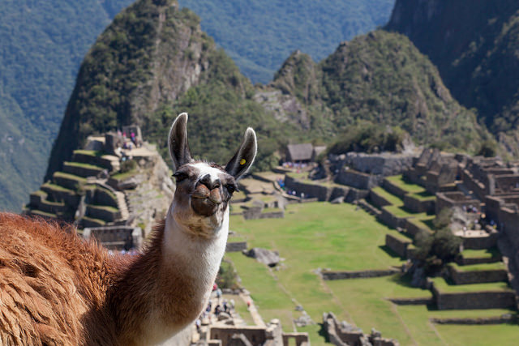

Machu Picchu Explorers Group
We are avid explorers and world travellers. Our sense of adventure takes us all over the world. Our most recent interest has been in Machu Picchu that is why we built this site. Machu Picchu is a 15th-century Inca site located on a ridge between the Huayna Picchu and Machu Picchu mountains in Peru. It sits 7,970 feet (2,430 meters) above sea level on the eastern slope of the Andes and overlooks the Urubamba River hundreds of feet below.
The site’s excellent preservation, the quality of its architecture, and the breathtaking mountain vista it occupies has made Machu Picchu one of the most famous archaeological sites in the world today. The site covers 80,000 acres (32,500 hectares). Terraced fields on the edge of the site were once used for growing crops, likely maize and potatoes.
In 1911, explorer Hiram Bingham III, a professor at Yale University, visited the site and published its existence for the first time. He found it covered with vegetation, much of which has now been removed. The buildings were made without mortar (typical of the Inca), their granite stones quarried and precisely cut.
Machu Picchu is believed to have been built by Pachacuti Inca Yupanqui, the ninth ruler of the Inca, in the mid-1400s. Many archaeologists believe that Machu Picchu was constructed as a royal estate of sorts.
Quechua was the language of the Inca empire which was destroyed by the Spanish in the 16th century. According with the Inca tradition. In the Quechua native language, “Machu Picchu” means “Old Peak” or “Old Mountain.”
We hope that our research on Machu Picchu piques your curiosity and inspires you to learn more about this amazing place. This site is by no means complete but we hope that it will start you on journey of discovery.